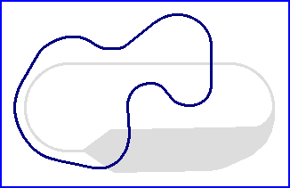

| Length | 1.000 Miles // 1.609 km |
| Direction | Clockwise |
Contact Information |
|
| Address |
|
| Telephone | |
| Website | http://www.goodyear.com |
Akron
Proving Ground Handling Course
|  | |
| Handling Course | Oval |
| Length | 1.000 Miles // 1.609 km |
| Direction | Clockwise |
Contact Information |
|
| Address |
|
| Telephone | |
| Website | http://www.goodyear.com |
Lasted Updated: 03 November 2002 00:11:32 GMT Standard Time